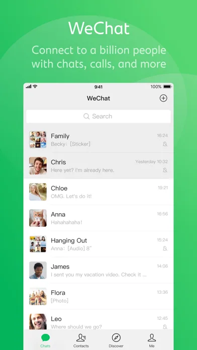

Wechat 的 Design.md 主题展示，围绕移动端、通讯与协作组织页面。
Wechat mobile product theme.

#07C160: #07C160#06A050: #06A050#95EC69: #95EC69#EDEDED: #EDEDED#FFFFFF: #FFFFFF#F7F7F7: #F7F7F7#D9D9D9: #D9D9D9#181818: #181818#888888: #888888#B2B2B2: #B2B2B2#FA5151: #FA5151#576B95: #576B95#FBE3B3: #FBE3B3display: PingFang SCbody: PingFang SCprimary: PingFang SCmono: ui-monospacefallback: -apple-system,PingFang SC,Noto Sans,BlinkMacSystemFont,SF Pro Text,Hiragino Sans,sans-serifhints: PingFang SC,PingFang SC,ui-monospacecontrol: 6pxcard: 8pxpreview: 8pxpill: 8pxcircle: 50%scale: 4px,6px,8px,50%source: design-mdbase: 4pxscale: 4px,8px,12px,16px,20px,24px,28px,44px,56pxsource: design-md